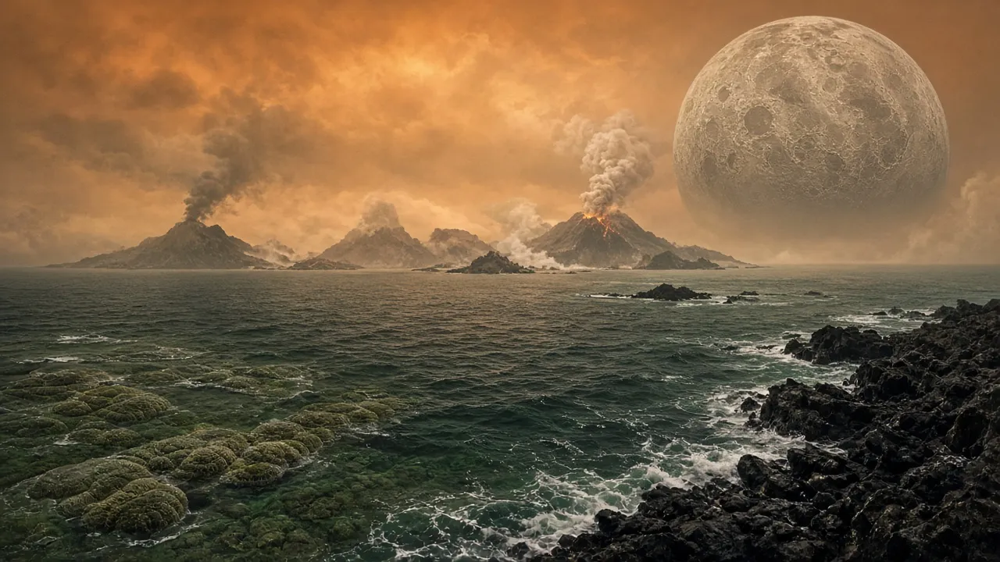

Oceans: Earth’s Blue Engine
How the first oceans formed and why they still run our planet.

Artist’s interpretation — SI render made for Before Saving Planets; science per cited sources (not a photo).
Water arrived early
A 4.4-billion-year-old zircon crystal from Western Australia suggests liquid water existed on Earth very early in its history.
Life began in the sea
The earliest life was microbial. Ocean microbes made oxygen by photosynthesis, leading to the Great Oxidation Event about 2.4 billion years ago.
Oceans today
The ocean covers about 71% of Earth’s surface and holds about 97% of Earth’s water. Its average depth is about 3,700 meters (12,100 feet).
The deepest place
Challenger Deep in the Mariana Trench is the deepest known point: nearly 11,000 meters (about 36,000 feet).
Sources
🌍 The same oceans need help today: plastic, warming, overfishing.Ocean solutions on Saving Planets →
Keep digging: Continents on the MoveSeas: Where Oceans Meet LandThe Dead Sea: Lowest Place on Land · Back to the Dig Quest